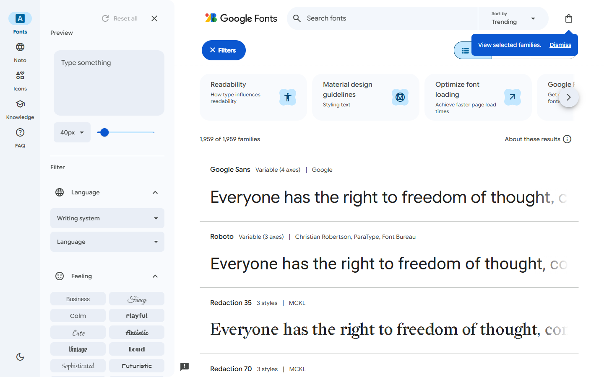

gpt-6.1-sol
转写中的18进入实现和自测，57项通过也没有发现参数来源错误。
39条命令记录 · 7个关键节点
当前测试政策已改为允许agent联网。本页已有成绩来自之前的受限网络运行，后续联网成绩将单独记录。
给 Agent 一段三分半的屏幕录像——有人一边操作 Google Fonts 的字体浏览页，一边讲解它是怎么工作的。Agent 要把这个页面重新做出来：长得像，而且操作起来行为一致。难点不在"照着画"，而在讲解里那些画面上根本量不出来的参数——滑块的区间和步长、清空输入框后回落到哪句话、搜索是子串匹配还是前缀匹配。
线上真站 · 非合成页录屏 3 分 33 秒 · 带中文讲解6 类可测控件10 条音频独有参数L2 单轮交付Windows · 工具联网受限委托场景：有人要你把一个在用的工具页重做一遍，他录了段屏给你，边操作边把注意事项说了一遍。你只有这段录屏——没有源码、没有设计稿、不许上网找原站。
recording.mp4 · 3 分 33 秒 · 1440×900 · 带中文讲解语音。录屏是对着线上真站录的，所以里面的悬停、输入、拖滑块、切布局都是真的在工作。没有给字体文件——讲解里明确说了用系统字体或 CSS 通用字族把各张卡片区分开就行。
| 交付物 | 内容 |
|---|---|
output/site/index.html | 能直接在浏览器打开的站点，不许需要构建、装依赖或起服务 |
output/notes.md | 从讲解里听到的、但画面上看不出来的行为和参数，以及是怎么实现的 |
范围限定在页面顶部约 1200 像素以内（原站整页 25 万像素高，是虚拟滚动，必须限界）。
这是本案例和同类 benchmark 最不一样的地方。下面每一条都在讲解里说了，但光看画面定不下来。做错任何一条，页面看起来一模一样，行为却不对。
| 讲解里说的 | 实测值 | 为什么画面上定不下来 |
|---|---|---|
| 滑块的区间、步长、默认值 | 8–300，步长 1，默认 40 | 滑块只有 178px 宽，刻度不可见 |
| 样张字号跟滑块是 1:1 | 滑块 96 → 样张 96px；200 → 200px | 看得出变大，看不出是 1:1 还是按比例缩放 |
| 滑块只管样张，界面字号不动 | 界面恒 16px，卡片名字恒 16px | 要同时盯两处才看得出，录屏里不会刻意演示 |
| 清空预览框后回落到哪句话 | 回到《世界人权宣言》第十八条开头 | 一闪而过，而且「退回字体名」同样说得通 |
| 预览文案对所有卡片同时生效 | 13 张全部跟着变 | 画面只能看到视口内那几张 |
| 搜索是不区分大小写的子串匹配 | 搜 sans 命中 Open Sans / Noto Sans | 只演示了小写，看不出是子串还是前缀 |
| 三个布局按钮是一组单选 | 同时只有一个处于选中态 | 要连点三次才看得出互斥 |
| 排序下拉的四个选项与默认值 | Trending / Most popular / Newest / Name，默认 Trending | 下拉展开只有一帧 |
| 各卡片样张字体彼此不同 | 线上 13 种 | 看得出不同，但「必须不同」是约束不是观察 |
| 1024px 以下左栏自动收起 | 卡片左缘从 476 变 112 | 断点数值画面上没有 |
配套静音消融包只移除音轨。尚无完成的同模型配对结果，音频贡献需要报告实际分差；模型可能凭画面或产品先验猜中部分参数。
| 桶 | 权重 | 判据数 | 怎么算 |
|---|---|---|---|
| IFS 交互功能 | 0.25 | 19 | 按录屏里的操作顺序回放，段内级联——一步做不到，后面的都不给分 |
| AFS 音频独有 | 0.25 | 14 | 只能从讲解里听到的参数。配套做了静音消融包（画面逐帧一致、只去音轨），尚未完成配对实验，应报告实测分差；模型可能从画面或先验猜中部分参数 |
| CVG 内容广度 | 0.25 | 连续值 | 复刻了参考页面多少内容：文案严格覆盖 0.5 + 归一化覆盖 0.3 + 词级召回 0.2 |
| VFS 视觉保真 | 0.15 | 11 + judge | 0.6×几何（确定性，专挑模型凭直觉会做错的量）+ 0.4×逐条二值 rubric judge |
| RSP 响应式 | 0.10 | 7 | 1440 / 1280 / 1024 / 1000 / 768 / 390 六个宽度 |
参考基准不是把原站冻结成离线副本——实测行不通，Google Fonts 是 Angular 应用，冻结后交互全失效。改成照 IWR-Bench 的实际做法：从线上观测固化成静态产物（控件几何、每个交互的前后状态、字号谱、文本表、各断点），判分器比对产物。
| 总分 | IFS 交互 | AFS 音频 | CVG 广度 | VFS 视觉 | RSP 响应式 | 耗时 | |
|---|---|---|---|---|---|---|---|
| gpt-6.1-sol xhigh · 工具联网受限 | 83.72 | 100.0 | 92.9 | 47.7 | 100.0 | 85.7 | 2774s |
| 参考实现 Claude编写 | 96.44 | 100.0 | 100.0 | 85.8 | 100.0 | 100.0 | — |
| oracle_max 满分构造解 | 100.00 | 100.0 | 100.0 | 100.0 | 100.0 | 100.0 | — |
以上均为确定性口径（--no-judge），VFS仅为几何分。oracle_max必须100，验证所测确定性判据可同时满足；参考实现由Claude编写，不是理论上界或独立人工基线。满分构造解也不证明视觉裁判满分或录屏中所有文案清晰可读。
对同一份Sol交付，另用NJU Link视觉裁判复核，含裁判总分为83.72。该口径与上表分别记录，裁判逐条判断并进行反驳复核；截图与原始判词独立留档。
模型拿到 83.72，参考实现 96.44，差距 12.72 分。交互（IFS 19/19）和视觉几何（11/11）都满分，差距几乎全部来自内容广度（47.7 vs 85.8）和一条听错的音频参数。


先阅读每次运行的过程总结，再按需查看关键节点或完整记录。点击编号可直接定位原命令与输出。
这些是对执行过程的整理；模型自测与组织者正式验收分别标注，不把工具调用次数当作推理质量。
读取到的自动转写将字号范围写为18–300（#25），随后模型在可见回复中将它列为已确认参数（#28），最终说明仍保留18–300（#46）。原录屏要求的是8–300。
更关键的是，模型的verify_site.py也断言min/max/step必须等于18/300/1。57项测试通过验证了实现与模型自身理解一致，没有独立验证理解的来源。查看转写、实现与测试的原始片段。这是一条可追溯的错误传播链。
浏览器最初不可执行，修复后又在320px发现横向溢出（#32、#36）；后续测试成功（#40）。这些修复是有效工程进展。但独立验收仍测得390px卡片宽294px，低于300px下限。
页面不横向溢出和卡片应铺满是两条不同约束；前者通过不能推出后者通过。自测也能严谨地检验一个错误参数，因此需要同时检查参数出处和验证对象。
当前交付通过交互19/19和几何11/11，但文案覆盖约33/65。说明中披露仅保存36条本地字体元数据、每次渲染顶部8张；使用系统字体替代缺失字体。它完成了一个有行为的字体浏览器，却仍对原页面的信息量作了压缩。
这些是交付与检查中可观察到的取舍；没有消融实验，不能断言使用系统字体或本地数据规模单独造成了全部覆盖失分。旧运行的受限网络条件仍单独保留，不追溯改称联网成绩。
| 桶 | 没过的判据 | 实测 | 性质 |
|---|---|---|---|
| AFS | ① 滑块最小值是 8 | min=18 | 真实的听错：讲解说的是「八到三百」，它听成了「18–300」，写进了 notes 也写进了代码 |
| RSP | 390px 下卡片宽 300–390（铺满而不溢出） | 294 | 手机宽度下卡片没铺满 |
| CVG | 内容广度 47.7（参考实现 85.8） | 文案覆盖 51%（33/65） | 唯一没有饱和的轴。原站顶部 1200px 有 65 条可见文案（已剔除 23 条图标字体连字名），录屏里读不全 |
本次Sol交付通过了当前交互与几何检查（19/19、11/11），主要失分来自文本内容覆盖、一个讲解参数与一项移动端宽度检查。单次结果不能证明其他交互或视觉检查也已饱和。
造题的人最容易骗自己的地方，是把自己判据的 bug 当成模型的失误。这一轮查出三个，都不是靠读代码发现的：
| 缺陷 | 后果 | 怎么查出的 |
|---|---|---|
搜索判据用 rob 做查询 | 命中的全是 Roboto*，本身就以 rob 开头——子串实现和前缀实现扣分完全相同（0.00），这条判据是死的 | 单点突变 |
| 滑块可见性要求高 > 3px | 模型的滑块是 Material 风格的 3px 细轨道，被判成「不存在」，级联扣掉 16 条判据 | 读模型交付的 HTML |
| 「1024 以下收起」在整点上判 | 中文「1024 以下」可读成 ≤ 或 <，模型按 < 实现，在整点上判等于拿措辞的歧义扣分。改成在 1280（该在）和 1000（该收）两点判 | 读模型的 notes.md |
做法是单点突变——每次只改 oracle 的一个参数，看总分掉多少。掉不动分的判据就是死判据。不能一次改多处：实测「清空变空」会让首屏连样张文字都没有，卡片探测直接失败，把另外几条判据和几何分一起拖下去，那样测不出每条判据的独立区分力。
| 把 oracle 改坏的方式 | 总分 | 扣分 | IFS | AFS | |
|---|---|---|---|---|---|
| （oracle 原样） | 96.44 | — | 100.0 | 100.0 | |
| 只放 5 张卡片 | 75.81 | -20.63 | 31.6 | 92.9 | |
| 滑块区间/步长/默认值改成 0–100 step5 默认50 | 78.30 | -18.14 | 63.2 | 64.3 | |
| 清空预览框后回落到字体名（而不是默认句） | 79.70 | -16.74 | 42.1 | 92.9 | |
| 预览文案只作用于第一张卡片 | 81.50 | -14.94 | 47.4 | 92.9 | |
| 预览文案不生效（打字后卡片不变） | 81.50 | -14.94 | 47.4 | 92.9 | |
| 样张字号按比例缩放，不是 1:1 | 84.13 | -12.31 | 57.9 | 92.9 | |
| 行布局卡片只有 400 宽 | 91.13 | -5.31 | 84.2 | 100.0 | |
| 网格布局还是一列 | 91.18 | -5.26 | 79.0 | 100.0 | |
| 搜索改成只匹配开头 | 92.02 | -4.42 | 89.5 | 92.9 | |
| 1024px 下左栏不收起 | 93.23 | -3.21 | 100.0 | 92.9 | |
| 界面字号跟着滑块一起变 | 94.66 | -1.78 | 100.0 | 92.9 | |
| 所有卡片用同一个字体渲染样张 | 94.66 | -1.78 | 100.0 | 92.9 | |
| 排序下拉只有三个选项，且名字不对 | 94.66 | -1.78 | 100.0 | 92.9 | |
| 卡片名字行字号也跟着滑块变 | 94.66 | -1.78 | 100.0 | 92.9 |
14 个突变，扣分 1.78–20.63 分，没有死判据。区分力主要来自 IFS 的级联：参数错一个，后面整条轨迹都走不下去。